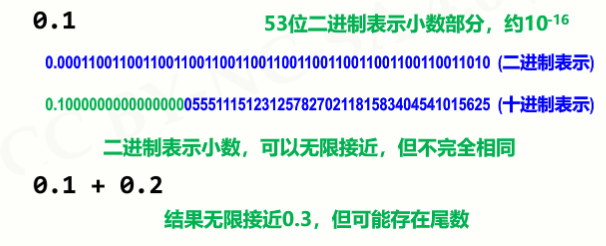
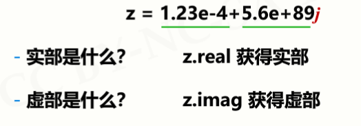
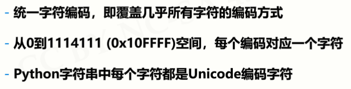
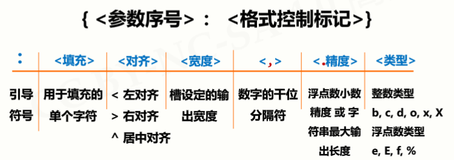
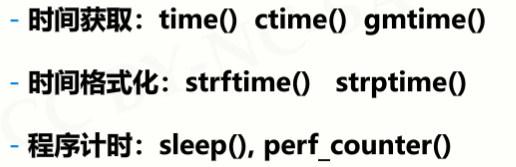
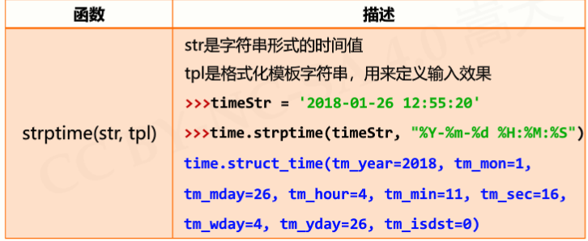

原文连接:https://www.cnblogs.com/wlrblog/p/PythonStudyThree.html
Python学习笔记（三）——基本数据类型
一、数字类型及操作
1、数字类型
1.1 整数类型
1.1.1 取值范围
1. 1.2 4种进制表示形式
1.2、浮点数类型
1.2.1 取值范围
1.2.2 浮点数之间存在不确定尾数，不是bug

1.2.3 浮点数还可以采用科学计数法表示

1.2.4 关于Python浮点数的注意事项
1.3、复数类型
1.3.1 概念

1.3.2 复数实例

2、数值运算操作符
3、数值运算函数
4、实例：天天向上的力量
4.1 问题1: 千分之一的力量
代码：
#DayDayUpQ1.py
dayup = pow(1.001, 365)
daydown = pow(0.999, 365)
print("向上：{:.2f}，向下：{:.2f}".format(dayup, daydown))运行结果：
4.2 问题2：千分之5和百分之1的力量
代码：
- #DayDayUpQ2.py
- dayfactor = 0.005
- dayup = pow(1+dayfactor, 365)
- daydown = pow(1-dayfactor, 365)
- print("向上：{:.2f}，向下：{:.2f}".format(dayup, daydown))
运行结果：
4.3 问题3：工作日的力量
代码：
- #DayDayUpQ3.py
- dayup = 1.0
- dayfactor = 0.01
- for i in range(365):
- if i % 7 in [6,0]:
- dayup = dayup*(1-dayfactor)
- else:
- dayup = dayup*(1+dayfactor)
- print("工作日的力量：{:.2f} ".format(dayup))
运行结果：
4.4 问题4：工作日的努力
分析：
代码：
- #DayDayUpQ4.py
- def dayUP(df):
- dayup = 1
- for i in range(365):
- if i % 7 in [6,0]:
- dayup = dayup*(1 - 0.01)
- else:
- dayup = dayup*(1 + df)
- return dayup
- dayfactor = 0.01
- while dayUP(dayfactor) < 37.78:
- dayfactor += 0.001
- print("工作日的努力参数是：{:.3f} ".format(dayfactor))
二、字符串类型及操作
1、字符串类型的表示
2、字符串有 2类共4种 表示方法
3、字符串的使用
4、字符串的特殊字符
5、字符串操作符
举例：获取星期字符串
代码：
#WeekNamePrintV1.py
weekStr = "星期一星期二星期三星期四星期五星期六星期日"
weekId = eval(input("请输入星期数字(1-7)"))
pos = (weekId - 1) * 3
print(weekStr[pos: pos+3])
6、字符串处理函数
7、Unicode编码

一个有趣的例子：
9、字符串处理方法
10、字符串类型的格式化：format() 方法
10.1 用法

举例说明：
10.2 format() 方法的格式控制

三、time库的使用
1、time库概述
1.1 time库是Python中处理时间的标准库
1.2 time库包含三类函数

1.3 time库的引入：import time
2、时间获取
3、时间格式化
3.1 时间格式化函数

3.2 格式化控制符
例子：
四、time库的应用场景
1、程序计时应用
1.1 分析问题
1.2 使用的函数

2、文本进度条
2.1 问题分析
2.2 需求分析
2.3 问题分析
2.3.1 如何获得文本进度条的变化时间
2.4 简单开始
代码：
- #TextProBarV1.py
- import time
- scale = 10
- print("------执行开始------")
- for i in range(scale+1):
- a = '*' * i
- b = '.' * (scale - i)
- c = (i/scale)*100
- print("{:^3.0f}%[{}->{}]".format(c,a,b))
- time.sleep(0.1)
- print("------执行结束------")
运行结果:
2.5 "文本进度条"单行动态刷新
2.5.1 刷新本质和关键
2.5.2 代码
- #TextProBarV2.py
- import time
- for i in range(101):
- print("\r{:3}%".format(i), end="")
- time.sleep(0.1)
运行结果：
2.6 “文本进度条”实例完整效果
代码：
- #TextProBarV3.py
- import time
- scale = 50
- print("执行开始".center(scale//2, "-"))
- start = time.perf_counter()
- for i in range(scale+1):
- a = '*' * i
- b = '.' * (scale - i)
- c = (i/scale)*100
- dur = time.perf_counter() - start
- print("\r{:^3.0f}%[{}->{}]{:.2f}s".format(c,a,b,dur),end='')
- time.sleep(0.1)
- print("\n"+"执行结束".center(scale//2,'-'))
运行结果：